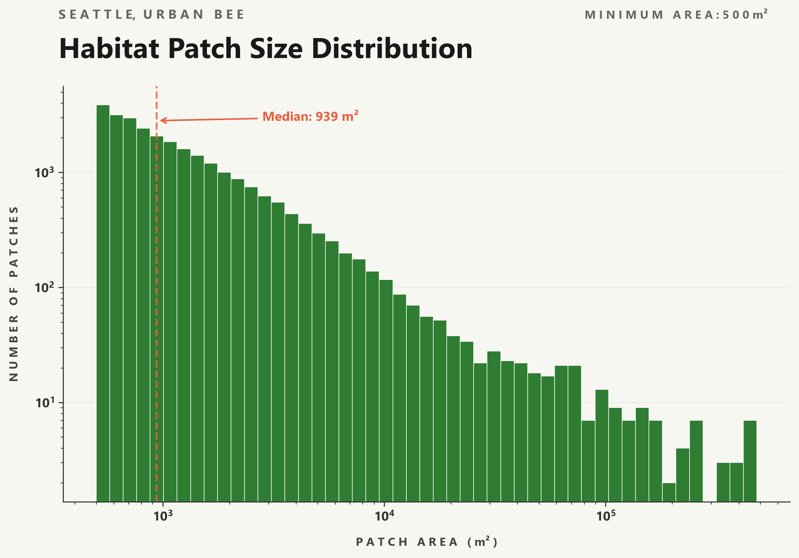
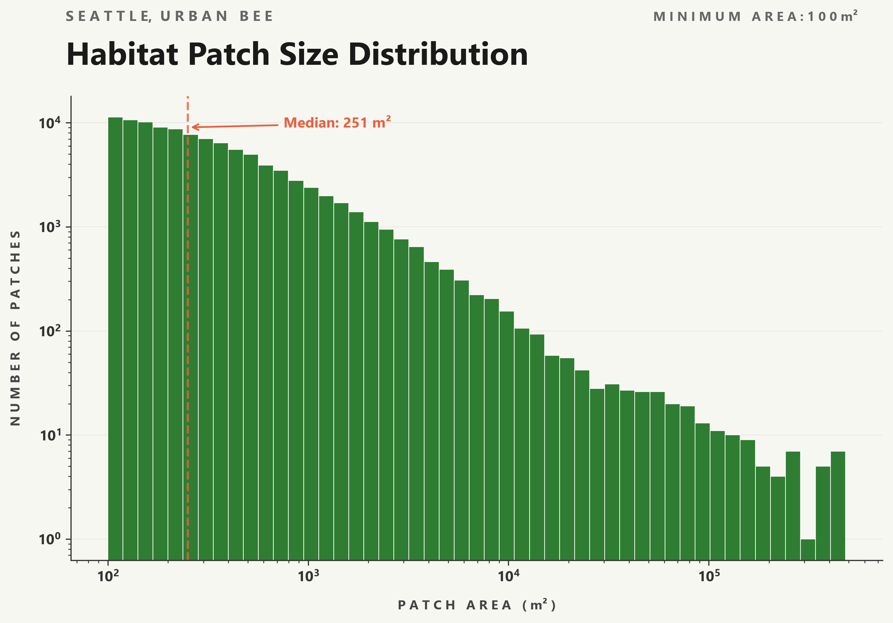

Urban Bee Habitat Connectivity
For this indepndent spatial analysis project, I use ArcGIS and Python to create a habitat connectivity network for urban bees foraging across Seattle. Note: red-green color blind friendly version coming shortly!
OVERVIEW & DATA SOURCES
As I have been building my competency with ArcGIS and geospatial science, I wanted to specifically deepen my understanding of spatial analysis and the approach that came to mind immediately was a connectivity analysis. The goal of this project was to model possible routes bees could take through a city, creating a network model showing the paths from one habitat to another, and quantifying how urban barriers disrupt those connections.
First, a few details about the data and basic methods. I used building and public park parcel polygons from the city of Seattle, paired with a 1-meter resolution tree cover raster. The tree canopy layer was derived from LiDAR and aerial imagery, and was produced through a partnership with the city of Seattle and the University of Vermont Spatial Analysis Laboratory (see report on tree cover loss in Seattle). I also created the study boundary using the northern and southern Seattle city boundaries, and excluded water bodies from USGS to define the coastline. While the validity of using tree cover as a proxy for bee habitats is certainly debatable, I needed an accessible dataset with a high enough resolution to scale with urban features, like individual streets and buildings.


ArcGIS & PYTHON PROCESSING
Toggle to read the details of my method.
In ArcGIS, these datasets are then combined(after removing tree cover fragments smaller than 3.5m2) into a binary habitat raster where every cell is either classified as bee habitat (1) or non-habitat (Null). This binary raster was then processed with the Region Group tool to assign a unique ID to each contiguous clump of habitat cells, producing over 320,000 distinct habitat patches! A cost surface raster is built from the binary habitat raster, assigning a cost of 1 to each habitat cell, a cost of 3 to other urban features such as streets and open land, and a cost of 100 to building footprints to create flight barriers. I then ran Cost Distance and Cost Allocation, with a maximum accumulated cost-distance of 2,400 cost distance. (800m set the maximum foraging distance, times 3 for the highest possible cost. This is a rather generous foraging distance, as it is possible for social bees like bumble bees to forage from 500m up to 1500m, but solitary, ground nesting bees are much more common to urban areas and only forage from around 100 to 300m. See Greenleaf et al. 2007 for more bee info!) For any given cell, the cost distance value is the accumulated cost to reach the nearest habitat patch, and the cost allocation value is the ID of that same nearest patch. These four rasters – habitat regions, cost surface, cost allocation, and cost distance – are then exported as GeoTIFFs and brought into Python for further analysis.
My primary analysis tool was NetworkX, a Python package which implements crucial graph algorithms, like Brandes’ algorithm for the betweenness centrality metric and breadth-first search for connected components, in just a few lines. The first step was to filter out patches below a minimum threshold (100 or 500m2) to reduce computational load. Then, each surviving patch is reduced to a single centroid point by averaging the row and column positions of all its cells and converting to UTM coordinates with the raster’s affine transform. So each patch is now a single point in a GeoDataFrame with attributes for the patch ID and area. The cost allocation raster is then scanned to find where different patch regions border reach each other, and along the borders the cost distance values from both sides are summed to estimate the total travel cost through the boundary point. Then the minimum cost across all boundary contact points for each pair of habitat patches is kept as the connection weight. Now we can build a NetworkX graph where each node is a centroid and edges are weighted by the minimum crossing cost. Betweenness centrality (a measure of how often a patch lies along the cheapest path between patch pairs, or how “central” it is) and connected components (subnetworks of mutually reachable patches, that are disconnected from other groups) are then computed and merged back onto the GeoDataFrame for visualization.
RESULTS & DISCUSSION
For both minimum areas, the patch size distributions follow a steep drop-off with many small patches, and few large ones. At the 500m2 threshold, about 27,000 habitats are kept, and dropping the minimum size to 100m2 keeps over 105,500, capturing all the smaller parks and street tree clusters. The median habitat patch at 100m2 is only 251m2, showing that most of Seattle’s greenery exists as small, scattered pockets. As a side note, it is crucial to have larger areas of green spaces in cities rather than distributed smaller areas – both for the wildlife that depends on it, and for minimizing the urban heat island effect.
Now, for the real results! The red corridors in these city-wide maps, representing strings of highly central habitat patches, tend to follow clear urban barriers – I-5,I-90, the ship canal, etc – highlighting patches that serve as critical bridges across these gaps. The difference between the two minimum size thresholds is quite dramatic: at 100m2, the city is filled with a dense spread of small stepping-stone like habitats that were not visible at 500m2 and, with a larger spread of these red corridors, are doing much more work for the overall connectivity of the habitat network.


Zooming in, we can now see the smaller-scale structure of our network in Northgate. Edges radiate visibly, especially from larger patch areas, which appear as single high-degree bodies with many edges because of the park's much longer perimeter bordering many smaller patches. Occasionally, you may notice a point that appears to sit slightly inside a road or interstade corridor; this is an artifact of averaging cell positions across an irregularly shaped patch, not an actual indication that a habitat exists in the roadway.


These connected component maps show where the Seattle habitat network can fracture, and the two minimum thresholds show very different pictures. For 500m2, there are clearly defined isolated clusters – Phinney Ridge, Wallingford, and Fremont each form distinct components separated by interest and the ship canal. Dropping to 100m2 fills in almost all of these gaps, forming a much more connected network.


Looking at one last map – Downtown at the 100m2 looks completely different from Northern Seattle, with the commercial core west of I-5 almost empty. There is a transition zone in Capitol Hill, well connected on its eastern side but fragmenting rapidly as you approach downtown. This could be a very impactful place to invest in a handful of new green spaces that could bring these isolated clusters back into the main network.

Comparing the two thresholds, there is a clear pattern where the 100m2 model produces far more high centrality patches with the largest centrality values jumping from 0.000025 to 0.002 despite the larger graph size increasing the normalization denominator. This really emphasizes the outsized role that smaller patches play, not only by simply increasing the number of does in the network but by creating new connections that funnel traffic through specific corridors – every shortest path between the newly connected clusters has to run through the small patch that bridged them, concentrating the betweenness centrality. And, it is hard for me to say which threshold is more accurate. The 500m2 threshold is a bit more ecologically conservative, as a 500m2 patch can realistically support both foraging and nesting and thus represents an entirely valid habit. The 100m2 threshold on the other hand is more generous, including patches that might support a foraging stop but likely not a nesting site. The comparison is very telling, even though these small patches might not qualify as a true habitat, they are both the most crucial and most vulnerable points in the network as a whole.